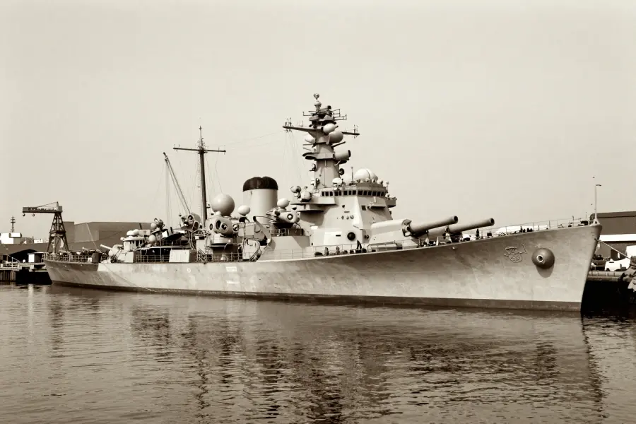

The Philadelphia Experiment: Did the Navy Make a Ship Invisible?

The USS Eldridge allegedly vanished from Philadelphia Naval Yard in 1943!
In October 1943, the story goes that the U.S. Navy made an entire ship disappear from the Philadelphia Naval Yard — and made it reappear over 200 miles away in Norfolk, Virginia, before returning. Sailors were allegedly fused into the ship's metal hull. Some went insane. The government covered it all up.
At least, that's what some people claim happened. The Philadelphia Experiment has become one of the most famous conspiracy theories in American history — but separating fact from fiction is where things get really interesting.
Overview
The Legend Begins
The story originated in 1955 when a man named Carl M. Allen (writing under the name Carlos Allende) sent a series of letters to author Morris K. Jessup. Allen claimed he witnessed the experiment from a nearby ship, the SS Andrew Furuseth.
According to Allen's letters, the Navy had been experimenting with electromagnetic fields to create a cloaking device for ships. The idea was based on Einstein's unified field theory and involved wrapping the USS Eldridge in massive electrical coils.
Supposedly, massive electromagnetic generators were installed on the ship!
👻 The Ghost Ship Effect
Allen claimed that after the experiment, sailors on the Eldridge suffered terrifying side effects — some became invisible, some walked through walls, and others were "frozen" in time for hours. These stories grew wilder with each retelling!
Evidence
A useful way to read this evidence is by confidence level. High-confidence points are independently confirmed by multiple sources; medium-confidence points are plausible but debated; low-confidence points stay provisional until stronger data appears.
Research on The Philadelphia Experiment is strongest when official Navy records, crew testimonies, and journalistic investigation converge. This approach helps distinguish documented naval operations from later additions to the story.
What the Records Show
The U.S. Navy has officially denied that any such experiment ever took place. Navy records show the USS Eldridge was in New York, not Philadelphia, on the dates in question.
- 📜 No government documents reference a "Philadelphia Experiment" or invisibility project
- 👤 Crew members of the USS Eldridge have denied any unusual events
- 🔬 Einstein's unified field theory was never completed — making it impossible to base technology on it
- 📰 The story gained popularity after the 1979 book and 1984 film
Competing Explanations
Competing explanations usually persist because each one fits part of the evidence while missing another part. Researchers test these models against chronology, physical constraints, and independent documentation to identify which interpretation requires the fewest assumptions.
What Might Have Really Happened?

The actual USS Eldridge - a Cannon-class destroyer escort commissioned in 1943.
The most credible explanation is that the legend grew from real but misunderstood wartime activities. During WWII, the Navy conducted experiments with degaussing — running electrical currents through ship hulls to make them invisible to magnetic mines and torpedoes.
These degaussing operations involved cables, generators, and electrical fields — which could have appeared strange and mysterious to an untrained observer. Over time, the mundane reality of degaussing likely morphed into the fantastical tale of a vanishing ship.
🎬 Hollywood Amplification
The 1984 movie "The Philadelphia Experiment" turned the legend into pop culture gold. The film's success convinced many people the story was based on confirmed facts — but the movie was pure science fiction!
Open Questions
Open questions remain because source quality is uneven across time: some records are direct and detailed, while others are fragmentary or second-hand. Future archival discoveries, improved imaging, and more precise dating methods may refine conclusions without overturning well-supported core findings.
Why the Story Persists
The Philadelphia Experiment remains fascinating because it touches on real wartime secrecy, genuine government research programs, and the public's distrust of official explanations. The Navy did conduct classified experiments during WWII — just not the ones described in this legend.
The story also endures because of Carl Allen's handwritten notes, which the Office of Naval Research actually investigated. Their conclusion: Allen's claims were not credible. But the fact that the government took the letters seriously enough to investigate only fueled more conspiracy theories.
Whether truth or myth, the Philadelphia Experiment reminds us that wartime secrecy creates the perfect breeding ground for extraordinary legends!
📖 Recommended Reading
Want to learn more? Check out Philadelphia Experiment on Amazon for a deeper dive into this fascinating topic. (As an Amazon Associate, we earn from qualifying purchases.)
References & Further Reading
- Britannica overview of the Philadelphia Experiment
- U.S. Naval History and Heritage Command official response
- History.com feature on the Philadelphia Experiment
- Skeptical Inquirer investigation and debunking
- Google Scholar literature search
Editorial note: reconstructions are continuously revised as imaging and inscription studies improve. See our Editorial Policy.